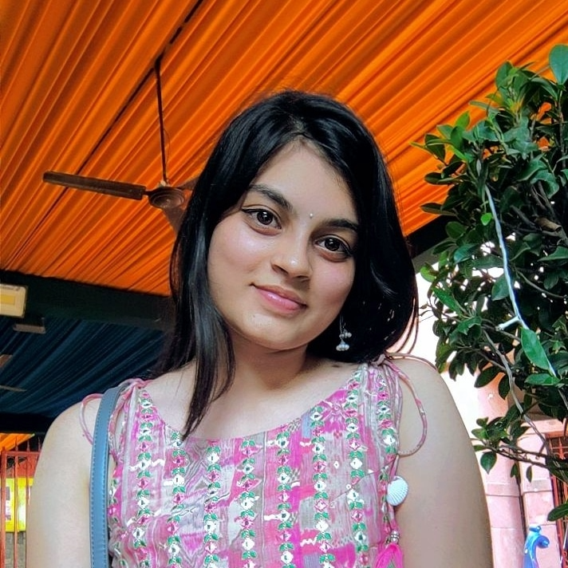

Sejal Kaur

Summary
I am a hardworking and dedicated individual with experience in developing websites.
Education
- Bachelors in technology, Computer science- Bennett University
- School-St.Mary's Senior Sec. School ,Moradabad
Work Experience
- Currently working on a project related to digital coach for autistic children with the respected faculty (Dr. Prashant Gupta)
Skills
- Html
- CSS
- CPP using Data structures
- Machine learning
Certifications
- Agile and amp(software)
- Software engineering
- Mathematics for machine learning
Contact me